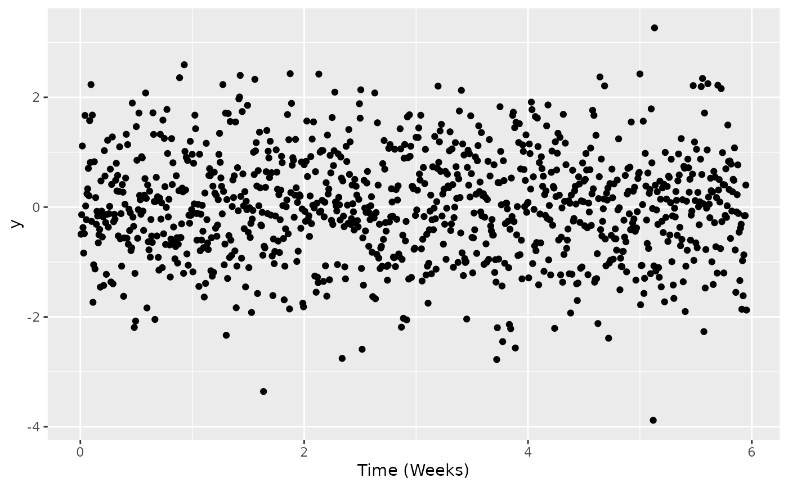

xgx_scale_x_time_units converts x axis scale from one time unit
to another.
Supported units include hours, days, weeks, months, and years, which
can also be called using just the first letter (h, d, w, m, y).
xgx_scale_x_time_units(
units_dataset,
units_plot = NULL,
breaks = NULL,
labels = NULL,
...
)
xgx_scale_y_time_units(
units_dataset,
units_plot = NULL,
breaks = NULL,
labels = NULL,
...
)units of the input dataset, must be specified by user as "h", "d", "w", "m", or "y"
units of the plot, will be units of the dataset if empty
One of:
NULL for no breaks
waiver() for the default breaks computed by the
transformation object
A numeric vector of positions
A function that takes the limits as input and returns breaks
as output (e.g., a function returned by scales::extended_breaks()).
Also accepts rlang lambda function notation.
One of:
NULL for no labels
waiver() for the default labels computed by the
transformation object
A character vector giving labels (must be same length as breaks)
An expression vector (must be the same length as breaks). See ?plotmath for details.
A function that takes the breaks as input and returns labels as output. Also accepts rlang lambda function notation.
other parameters for
scale_x_continuous
ggplot2 compatible scale object
Note: xgx_scale_x_time_units only scales the plot axis, all other
specifications must be on the original scale of the dataset (e.g. breaks,
position, width)
data <- data.frame(x = 1:1000, y = rnorm(1000))
ggplot2::ggplot(data = data, ggplot2::aes(x = x, y = y)) +
ggplot2::geom_point() +
xgx_scale_x_time_units(units_dataset = "hours", units_plot = "weeks")
